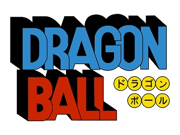
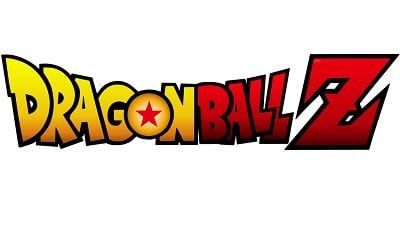
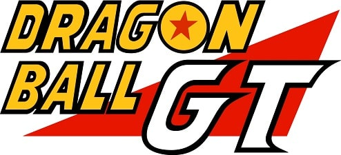
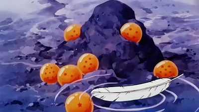

Dragon Ball
La historia de Dragon Ball arranca con la llegada de Goku a la Tierra sin conocer sus orígenes. Pronto conoce a Bulma, una joven dispuesta a encontrar las bolas de Dragón. Así que los primeros episodios se centran en esta búsqueda, mientras que algunos antagonistas les acechan para conseguir también las esferas. Pilaf es el primer villano que quiere conquistar el mundo, pero no es un antagonista tan exigente como los que llegarían en Z.
Después de la búsqueda de las bolas, el Maestro Muten Roshi empieza a entrenar a Goku y Krilin para competir en los Torneos de Artes Marciales. Esta competición ocupa buena parte del argumento de la serie, así que se verán los primeros enfrentamientos de Goku y una pequeña muestra de su potencial. El antagonista más poderoso de estos capítulos es Piccolo Daimaoh, un demonio que es enviado a la Tierra para crear el caos.
Dragon Ball Z
Esta serie cambió por completo el concepto de Dragon Ball. Goku ya no es un niño, pero ha seguido entrenando desde entonces para convertirse en un gran guerrero. También ha formado una familia junto a Chi-Chi y presenta a su hijo Son Gohan. El ritmo de la serie es mucho más frenético y se centra más en la evolución de los guerreros Z que son Yamcha, Ten Shin Han, Piccolo, Krilin y Goku. Raditz llega a la Tierra para buscar a Goku y pondrá en peligro a todos los habitantes del planeta.
Además, anticipa la llegada de otros guerreros saiyan como Vegeta y Nappa. Dragon Ball Z explica constantemente el crecimiento individual de sus protagonistas, sobre todo de Goku que se verá obligado a aumentar su poder para derrotar a todos los invasores. Muchos de los villanos que aparecen en esta serie tendrán mayor recorrido y otras apariciones en el futuro como Freezer o Célula. También presenta a personajes como los androides y un misterioso aventurero del tiempo que viene de otra dimensión futurista
Dragon Ball GT
Si nunca has visto Dragon Ball, quizás te preguntes por qué se le tiene tanta inquina a esta serie. La respuesta es fácil. Akira Toriyama no quería continuar con la historia de Dragon Ball Z, pero Toei Animation quiso aprovechar el abrumador éxito de la serie con una producción propia llamada Dragon Ball GT. Esto quiere decir que Toriyama no intervino en ningún momento en el argumento ni la animación. Tan sólo dio algunos consejos iniciales a Toei Animation. Teniendo esto en cuenta, GT podría entenderse de una historia alternativa, ya que no tiene mucha continuidad con Dragon Ball Z. Toei Animation quiso recuperar el espíritu aventurero de los primeros episodios de la serie, donde se buscaban las bolas de Dragón. Pilaf vuelve a escena y por accidente rejuvenece a Goku. Las esferas se esparcen de nuevo por los universos y el protagonista tendrá que viajar por la galaxia para reunir de nuevo las bolas, algo que le llevará más problemas porque despertará a los Siete Dragones Malignos. La serie sólo duró 64 episodios por sus discretos números.
Historia de las esferas
Las bolas de Dragón son un artefacto mágico, cuyas esferas están repartidas por todo el mundo, que al reunirlas conceden deseos. Tienen un papel importante en la historia, ya que han concedido muchos deseos como resucitar personajes. Es como si Akira Toriyama tuviera un as en la manga para revertir una situación cuando así lo quiera. Aunque no es canon, en GT se dijo que el uso excesivo de las bolas de Dragón podía despertar a los Siete Dragones Malignos. Sin embargo, esto no se ha demostrado nunca más. El objetivo es reunir las 7 bolas para invocar a un Dragón Celestial que conceda los deseos.
muchos tipos de bolas de Dragón como las terrenales o las namekianas. Tienen sus propias características y normas para activarlas. Durante la serie se ha visto en multitud de ocasiones, sobre todo después de derrotar a Freezer o Célula que mataron a muchas personas inocentes. De hecho, la trama inicial giró en torno a la búsqueda de las bolas de Dragón, pero su presencia se ha ido diluyendo para centrarse en otras cosas.